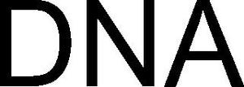

Trade Mark Journal No.2025/012 21 March 2025
WO0000001829483 (10,18,25)
Office of origin: Australia
Date of International Registration:5 November 2024
Date of designation in the UK:
5 November 2024

International priority date claimed: 9 October 2024
(Australia)
(2488987)
- Class 10
- Medical scrubs; veterinary scrubs; scrub suits; surgical scrub suits; medical scrub suits; veterinary scrub suits; medical scrub hats; surgical scrub hats; veterinary scrub hats; medical scrub caps; surgical scrub caps; veterinary scrub caps; compression garments; compression garments for medical, surgical, veterinary and therapeutic purposes; support garments for medical, surgical, veterinary and therapeutic purposes; lab coats for surgical purposes; lab coats for use in medical examination and treatment; clothing, headwear, footwear especially for operating rooms; protective clothing, footwear and headgear for medical use; protective clothing, footwear and headgear for surgical use; protective clothing, footwear and headgear for veterinary use; disposable protective clothing, footwear and headgear for medical purposes; disposable protective clothing, footwear and headgear for surgical purposes; disposable protective clothing, footwear and headgear for veterinary purposes; sterilised clothing, footwear and headgear for medical use; sterilised clothing, footwear and headgear for surgical use; sterilised clothing, footwear and headgear for veterinary use; reusable protective clothing, footwear and headgear for medical purposes; reusable protective clothing, footwear and headgear for surgical purposes; reusable protective clothing, footwear and headgear for veterinary purposes; medical masks; disposable medical masks; reusable medical masks; surgical masks; disposable surgical masks; reusable surgical masks; veterinary masks; disposable veterinary masks; reusable veterinary masks; masks for use by medical, surgical and veterinary personnel; disposable masks for use by medical, surgical and veterinary personnel; reusable masks for use by medical, surgical and veterinary personnel; masks to prevent contagion; disposable masks to prevent contagion; reusable masks to prevent contagion; sanitary masks; disposable sanitary masks; reusable sanitary masks; therapeutic facial masks; disposable therapeutic facial masks; reusable therapeutic facial masks; protective masks for medical use; protective masks for surgical use; protective masks for veterinary use; extenders for medical, surgical and veterinary masks; extenders for masks to prevent contagion; extenders for sanitary masks; extenders for therapeutic facial masks; extenders for protective masks for medical, surgical and veterinary use; filters for medical, surgical and veterinary masks; filters for sanitary masks; filters for therapeutic facial masks; exercise equipment for medical rehabilitative purposes; physiotherapy and rehabilitation equipment for medical purposes; disposable surgical shoe covers; surgical shoe covers; compression socks; compression leggings; stethoscopes; protective visors for medical, surgical and veterinary use; surgical scrubs being clothing for surgeons; filters for masks to prevent contagion; scrubs for medical, surgical and veterinary personnel.
- Class 18
- Clothing for animals; pet clothing; pet shoes; pet headwear; collars for animals; collars for pets; leashes for animals; leashes for pets; leads for animals; leads for pets; harnesses; harnesses for animals; harnesses for pets; animal carriers [bags]; backpacks; bags; duffle bags; tote bags; shoulder bags; satchels; reusable carrier bags; carrying bags.
- Class 25
- Clothing; work clothing; footwear; headgear; jackets; lab coats; lab coats for hospital use; fabric masks [clothing]; fabric face masks; face masks [clothing]; sleep masks; sneakers; shoes; socks; puffer jackets; bomber jackets; jumpers; hooded jumpers; fleece vests; fleece jackets; knitted vests; knitted jackets; sweatshirts; sweatpants; tops [clothing]; graphic t-shirts; T-shirts; shorts; polo shirts; underwear; leggings; bras; sports bras; singlets; hats; caps; headbands; sports clothes; sports shirts; sports shorts; sports pants; scarves; bandanas; headscarves; sandals; slippers; belts; suspenders for clothing; flip-flops; thongs [footwear]; boots.
DNA Scrubs Pty Ltd
Representative: Murgitroyd & Company, Murgitroyd House, 165-169 Scotland Street Glasgow G5 8PL UNITED KINGDOM